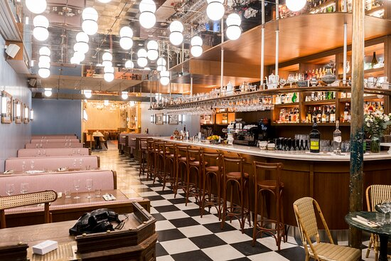

Plongez dans l'univers culinaire de L'Instant Gourmand

Notre Menu
Entrées :
Salade de chèvre chaud - 8€
Velouté de champignons - 6€
Escargots de Bourgogne - 10€
Plats :
Boeuf bourguignon - 15€
Salade du jour - 12€
Cassoulet maison - 14€
Desserts :
Tarte Tatin - 6€
Mousse au chocolat - 5€
Crumble aux pommes - 7€
Informations
Adresse : 456 Rue de la Paix, 75005 Paris
Horaires d'ouverture
Lundi - Vendredi : 11h30 - 14h30 / 18h30 - 22h30
Samedi - Dimanche : 12h - 23h
"L'Instant Gourmand est un véritable joyau de la cuisine française. La qualité de la nourriture et du service est exceptionnelle, et il n'est pas étonnant qu'il ait reçu plusieurs récompenses pour sa cuisine gastronomique. Le menu est conçu pour satisfaire les palais les plus exigeants, avec une sélection de plats saisonniers préparés avec des ingrédients frais et locaux." - Guide Michelin